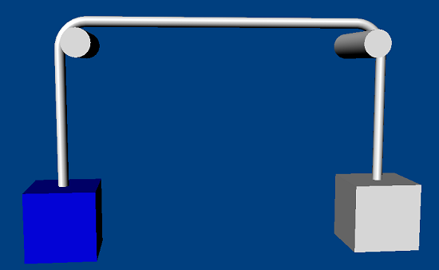

The pulley joint simulates a rope that can be thrown across a pair of pulleys. In this way, it is similar to the distance joint (the length of the rope is the distance) but the rope doesn't connect the two bodies along the shortest path, rather it leads from the connection point on one actor to the pulley point (fixed in world space), then to the second pulley point, and finally to the other actor.
The pulley joint can also be used to simulate a rope around a single point by making the pulley points coincide.
Note that a setup where either object attachment point coincides with its corresponding pulley suspension point in world space is invalid. In this case, the simulation would be unable to determine the appropriate direction in which to pull the object and a random direction would result. The simulation will be unstable. Note that it is also invalid to allow the simulation to end up in such a state.
|
Parameter |
Description |
| actor[0] | First actor |
| actor[1] | Second actor |
| localAnchor[0] | Attachment point of the rope in the first actor's frame. |
| localAnchor[1] | Attachment point of the rope in the second actor's frame. |
| pulley[0] | First suspension point in the global frame. |
| pulley[1] | Second suspension point in the global frame. |
| distance | The remaining length of the rope connecting the two objects. |
| stiffness | Stiffness of the constraint, between 0 and 1 (1 being the stiffest). |
| ratio | Transmission ratio (e.g., if set to 2, would cause the joint to apply twice the force on actor1 as actor0). |
| flags: | |
| NX_PJF_IS_RIGID | true if the joint maintains a minimum and maximum distance |
| NX_PJF_MOTOR_ENABLED | true if the motor is enabled |
NxPulleyJointDesc pulleyDesc;
pulleyDesc.actor[0] = actor0;
pulleyDesc.actor[1] = actor1;
pulleyDesc.localAnchor[0] = NxVec3(0,2,0); //Point on actor0 where the rope is attached.
pulleyDesc.localAnchor[1] = NxVec3(0,2,0); //Point on actor1 where the rope is attached.
pulleyDesc.pulley[0] = pulley0; //Suspension points of two bodies in world space.
pulleyDesc.pulley[1] = pulley1; //Suspension points of two bodies in world space.
pulleyDesc.distance = distance; //The remaining length of rope connecting the two objects.
pulleyDesc.stiffness = 1.0f; //Stiffness of the constraint, between 0 and 1 (stiffest).
pulleyDesc.ratio = 1.0f; //Transmission ratio.
pulleyDesc.flags = NX_PJF_IS_RIGID; //NX_PJF_IS_RIGID instructs the joint to maintain the minimum and maximum length/distance.
NxPulleyJoint* pulleyJoint = (NxPulleyJoint *)gScene->createJoint(pulleyDesc);